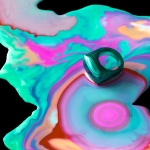
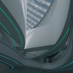
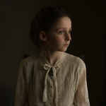
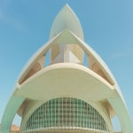
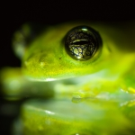

关于比赛
北中大师赛2023面向学生和教师开放。本次比赛共设立六个组别，分别为艺术、建筑、风光/自然、人像、街道/城市、生物。每个组别将评出以为大师获奖者，有机会获得校级荣誉并在北中小舞台进行展出。
组别
-

艺术
以艺术性的精美影像作品与绝妙的创意，讲述关于人的故事、情绪与深思。
-

建筑
无论是高耸入云的摩天大楼，还是恢弘大气的桥梁，以摄影师丰富的想象力，诠释建筑之美。
-
风光/自然
大自然之美形形色色，令人叹为观止的山河，令人渴望追逐的星辰，令人欲沉醉其中的花草，精彩的大自然世界。
-

人像
通过创意形式展示的人物肖像作品，包括全身照、半身照等所有人像作品。
-

街道/城市
记录上演在街道里的故事，展现城市面貌、都市文化及生活于其中的人。
-

生物
涵盖了从大型动物到微生物的所有对生物的拍摄